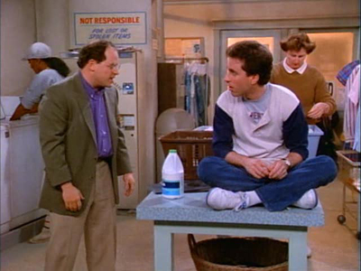

Seinfeld
The early seasons of Seinfeld - are these episodes evidence of a Sitcom finding its stride, or a prologue to the lives of the four people that surrendered to a life about nothing?
Do you recognize this song?
It's the original theme song of the TV show Seinfeld . Before the show hit its comfortable stride in the early summer of 1991, there was a five episode pilot season in the summer of 1989. The theme in the above video was replaced by the infinitely more famous synth and bass riff composed by Jonathan Wolff.
I grew up owning the entire catalog on DVD. No matter what I was doing, there was always a Seinfeld episode playing in the background to soak up the silence. I preferred episodes from the meatier range of the sitcom. Somewhere in the show's time line where all the characters had hit their stride, but still had not jumped the shark.
The pilot episode is entitled The Seinfeld Chronicles - a departure from the usual "The SOMETHING" all other episodes followed. In the pilot, Jerry has anxiety about a visiting female friend who is giving off mixed signals. George and Kramer do their best in advising Jerry, but ultimately all his efforts are futile when she casually informs him that she is engaged.
Though the plot has familiar elements, the characters in the pilot are barely recognizable. George is witty and dignified, Kramer is a timid shut-in, and Elaine is absent from the episode all together.
The unfamiliarity of this episode along with the other four in the first season are what drove me away from them. But I had a thought the other day - perhaps the first season of Seinfeld is intended to be more of a prologue than an opening act. Perhaps it's supposed to feel very different from the show.
This thought struck me - each person of the Seinfeld cast seems normal in the first season. The first season is a prologue in which we witness Jerry, George, Kramer, and Elaine reach a breaking point that leads them to a hilariously superficial and cynical take on life.
George
George Costanza is the American loser. He has no dignity, sense of purpose, or self-worth. He is the man that hires a contractor to modify his work desk to better accommodate secret naps in his office.
The George Costanza we hold dear wouldn't come close to recognize the man portrayed in The Seinfeld Chronicles . Let's remain on the surface for a bit and just examine his transformation in appearance.
This is the George you probably think of.

This is George in his first appearance of the show.

Though George exhibits some eccentricity, he is presentable and well-groomed. His hair is proudly combed, even after work hours in a crummy laundromat.
The dialog follows this trend. Later in the show, we rely on George for outbursts. He grunts, sweats, blushes, and screams. In the pilot, we find a suave, witty companion fit to converse with a comedian and meet him on his level. Much different from the George who is dim and an admitted failure with understanding women, this George readily offers Jerry advice on understanding their nuances. Here is a snippet of their conversation.
GEORGE: So, ya know, she calls and says she wants to go out with you tomorrow night? God bless! Devil you!
JERRY: Yeah, well…not exactly. I mean, she said, you know, she called this morning and said she had to come in for a seminar and maybe we'll get together.
GEORGE: [whistles disapproving] Ho ho ho, "Had to"? "Had to come in"?
JERRY: Yeah, but…
GEORGE: "Had to come in" and "maybe we'll get together"? "Had to" and "Maybe"?
JERRY: Yeah!
GEORGE: No…no…no, I hate to tell you this: you're not gonna see this woman.
JERRY: [indignant] What, are you serious…why, why did she call?
GEORGE: How do I know, maybe, ya know, maybe she wanted to be polite.
JERRY: To be polite? You are insane!
GEORGE: All right, all right, I didn't want to tell you this, you wanna know why she called you?
JERRY: Yes!
GEORGE: You're a back-up, you're a second-line, a just-in-case, a B-plan of contingency!
This George is confident in his mastery of women - a far fling from the George who desperately resorted to doing the opposite of his instincts to get women.
First season George was a hard worker. In the first episode, Kramer aimlessly asks George about his profession. George engages him seriously about the real estate market.
George is also remarkably successful. In The Stock Tip , George stands behind his investment in a business idea - even when Jerry pulls out. He reaps the profit as the idea takes off. The episode ends with George victoriously puffing on a cigar in the cafe and treating everyone to dinner.
So what broke this vibrant, hard-working, insightful George Costanza? Things begin to fall apart in the second season as George finds himself fighting against his sexist boss for his dignity. In The Revenge , George enlists the help of Elaine to humiliate him by 'slipping him a mickey' at an office party. Just as the boss publicly redeems George with accolades, he sips the poison and keels over. George is fired.
George shares a dark moment with Jerry where he pitifully muses on what little options he has left to pursue. I believe this is George's breaking point. He realizes that no matter how much he cares about things, he ultimately has no control over what happens. Getting hired, fired, and promoted honestly has nothing to do with work ethic. Meeting smart, attractive women has nothing to do with his insight. And as he swallows that bitter pill while sitting on Jerry's apartment floor, he evolves into the bitter, neurotic friend that is George Costanza.
Kramer
Kramer is the wild card - the bizarre neighbor that we can rely on to barge into Jerry's apartment with a fresh scheme plucked from the disturbed machinations of his metropolis fried brain. He is perhaps known best for the way he barges into Jerry's apartment.
Want to see my favorite Kramer entrance?
Yes - you watched that right. Kramer doesn't burst into the room ready to spout off a new scheme. Kramer knocks, then timidly asks "Are you up?", then slips in quietly. He still raids Jerry's fridge for leftovers, but he is much more mysterious about it. This is a very different Kramer.
As he and Jerry shoot the breeze, Jerry mentions in passing that Kramer hasn't left the apartment in years. Kramer is a shut-in. Later in the episode when he and George are in the same room, it is clear that they barely know each other. He even wonders with George if he should get into the real estate game - and not in the typical far-fetched Kramer way. He actually seriously considers it - as if he is short on money.
In the episode The Statue, Jerry, George, and Elaine struggle to confront a graduate student about a cherished statue that he swiped from Jerry's apartment while cleaning it. Jerry is uncomfortable doing anything without the police, Elaine fears upsetting her relationship with the man's lover as a business client, and George is useless.
Meanwhile, Kramer sits alone staring into the fourth wall, occasionally breaking the dialog to mutter to himself, I'm not happy about this. We should just get him . This is Kramer's breaking point. I like to imagine he is wrapping his head around the astounding truth that he is the only one there with nothing to lose. He doesn't know anyone. He has no money. He has no connections or valued relationships. He is free to do anything.
Kramer slips out of the apartment and proceeds to do the most Kramer thing of all. He impersonates an FBI agent and fast talks the man into giving up the statue.
This is Kramer's transformation. Perhaps the realization that he has nothing to lose in life gives him the courage to develop into the extroverted, entrepreneurial, free-spirited maniac that we still love today.
Elaine
Elaine is charming, intelligent, and quick to see through anyone's bullshit. Her brutal honesty makes her a turn-key fitting companion of Jerry, George, and Cosmo. Though she has many companions over the show's time line, she remains totally self-sufficient. She bounces back quickly from breakups, as she is usually the one breaking things off.
However, there was one relationship she evidently had a difficult time getting over. In The Stake Out Elaine dated Jerry. They wrestle with the awkward reality of remaining friends after their romantic involvement. Jerry feels so awkward about the whole thing that he refuses to ask Elaine about one of her friends he found attractive, opting instead to stake out her building.
Jerry and Elaine's tip toeing around their feelings for one another are the closest thing to a real human moment in Seinfeld. But slowly her human side begins to form calluses. In The Ex Girlfriend , Elaine wrestles with her neighbor's sudden aversion to greetings in the hallway. In The Pony Remark , Elaine loses her apartment to Jerry's obnoxious cousin Jeffery due to an old man's hearing impairment. Despite her talent and likability, Elaine is constantly met with other people's incompetence and indifference. Elaine's transforms into a cynical, capable woman who goes into every human interaction expecting to be disappointed - whether she is dating a moronic car mechanic or trying to avoid indulging everyone's fascination with The English Patient.
Jerry
Jerry undergoes absolutely no character development. He is static and unchanging. This was no mistake. I believe Jerry was intentionally left in tact to be the mocking observer of the Seinfeld world. He contributes nothing, demands nothing, and despite his exposure as a comedian he leaves little impression on the women he dates. He is ysimply a human version of bugs bunny wandering around in a world composed of his own stand up material.
He even flaunts his own plot immunity in the show. In The Opposite, Jerry remarks that everything always works out for him. Despite how dynamically the people around him succeed and fail, Jerry always breaks even without trying.
To borrow from Kramer's unintentionally profound line in The Opera
You're the nucleus, the straw that stirs the drink. You're the Miana!
But while his importance to the balance of the group is vital, Jerry is valueless as a person. Next time you are watching, take note of how many times a character will attempt to share their issues with Jerry, then give up in frustration under his low calorie mockery.
Closing
So why is Seinfeld so fun to watch? Is it simply the comedy?
Or does it meet us in a darker place. Do we secretly acknowledge that we indeed have no control over the world. That we may really have nothing to lose. That no matter how capable we are in our own life, some schmuck will tumble along to disappoint us.
Perhaps a show about nothing comforts us in the face of a life that feels like it is about nothing. Maybe there is a little George, Elaine, and Kramer budding inside of each person stuck in traffic or working a thankless job and a Jerry that can't help but sit back and heckle.
Edit: some much smarter people on reddit helped me put together this summary of each character's epiphany
- George: we can control nothing
- Kramer: we have nothing to lose
- Elaine: we can depend on others for nothing
- Jerry: nothing we do really matters
A show about nothing indeed.